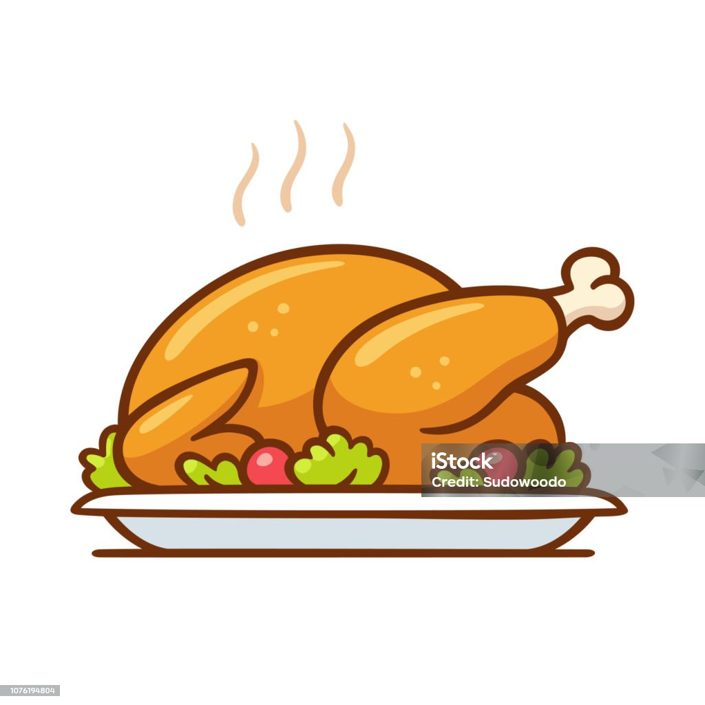

Roasted Chicken Recipe

Description
Roasted chicken is a classic, comforting dish loved around the world. Perfectly seasoned and slow-cooked to golden perfection,
the skin becomes crisp while the meat stays juicy and tender. This recipe combines simple ingredients like herbs, garlic, and
olive oil to create a flavorful, aromatic meal that’s perfect for family dinners or special occasions.
Serve it alongside roasted vegetables or a fresh salad for a complete, satisfying feast.
Ingredients
- 2 teaspoons salt
- 1 teaspoon white sugar
- ⅛ teaspoon ground cloves
- ⅛ teaspoon ground allspice
- ⅛ teaspoon ground nutmeg
- ⅛ teaspoon ground cinnamon
- 1 (4 pound) whole chicken
- 5 cloves garlic, crushed
Steps
- Mix salt, sugar, cloves, allspice, nutmeg, and cinnamon together in a small bowl until combined. Rub chicken all over with spice mixture. Transfer chicken to a large bowl, cover, and refrigerate for 24 hours.
- Preheat the oven to 500 degrees F (260 degrees C).
- Place chicken, breast-side down, on a rack in a roasting pan. Stuff chicken cavity with crushed garlic.
- Roast chicken in the preheated oven for 15 minutes. Reduce heat to 450 degrees F (230 degrees C) and continue roasting for 15 minutes more. Baste chicken with pan drippings; reduce heat to 425 degrees F (220 degrees C) and continue roasting for 30 minutes. An instant-read thermometer inserted into the thickest part of the thigh, near the bone, should read 165 degrees F (74 degrees C).
- Remove from the oven and allow to rest in a warm area for 20 minutes before slicing.
Back to home